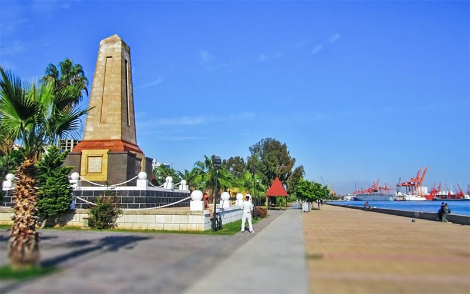

1.Kleopatra Kapısı
Antik dünyanın en önemli liman kentleri arasında yer alan ve bölgedeki devletlerle ticari ilişkileri olan Tarsus’un, bu özelliği nedeniyle çok sayıda esere rastlanıyor. Mısır Kraliçesi Kleopatra’nın denizden gemilerle gelip Tarsus’a girdiği kapıdan Romalı General Antonius ile görüşmeye gittiğinden söz ediliyor.Tarsus surlarından geriye kalan kapının Deniz Kapısı olan ismi geçmişi nedeniyle Kleopatra Kapısı‘na dönüşmüş. Kapının yüksekliği 8.50 m, genişliği ise 5.60 metre.2. Soli Pompeiopolis Antik KentiMersin’in 14 km güneybatısında MÖ 7. yüzyılda Rodoslu koloniciler tarafından kurulan Soli Pompeiopolis Antik Kenti, ismini güneşten alıyor. Mersin’in Mezitli ilçesi yakınında bulunan Neolitik, Helenistik ve Roma dönemleri gibi birçok medeniyetin izlerini taşıyan antik kente harap halinden dolayı Viranşehir de deniliyor.Kazıların devam ettiği ve bulunan eserlerin Mersin Müzesi‘nde sergilendiği Pompeipolis kentinde günümüzden 3 bin yıl öncesine dayanan yüzlerce muhteşem eser bulunmuş.3. Mersin Arkeoloji MüzesiMersin’de görülmesi gereken yerlerin başında hiç kuşkusuz Mersin Müzesi geliyor. Kentin dört bir yanından gelen arkeolojik ve etnografik eserlerin sergilendiği bu müze, Mersin’in tarihi geçmişine ışık tutuyor.Şehir merkezinde olması, kolay ulaşım imkanı ile müze, kenti ziyaret edenlerin uğradığı ilk yerlerden. Kültür Merkezi’nin bitişiğinde yer alan Mersin Müzesi’nin 3 ayrı salonunda medeniyet izlerine tanıklık etmek mümkün.4. Mersin Atatürk Evi MüzesiMersin şehir merkezinin en işlek noktalarından olan Atatürk Caddesi üzerinde yer alan Atatürk Evi Müzesi, 1897’de dönemin Almanya Konsolosu için yaptırılmış.1925’te kenti ziyaret eden Atatürk ve eşi Latife Hanım’ın 11 gün kaldığı bina, 1992’de müze olarak ziyarete açılmış. Anıtkabir Müzesi’nden getirilen 22 parça eşyanın sergilendiği binanın üst katında etnografik objeler bulunuyor.5. Refah Şehitleri Anıtı Mersin’de yakın tarihe ait en önemli eserlerden biri olarak kabul edilen Refah Şehitleri Anıtı, II. Dünya Savaşı’nda yaşanan bir faciada batan Refah Gemisi’nde şehit düşen 167 askerin anısına yapılmış.Subay, astsubay ve erlerden oluşan 199 kişilik mürettabat Mersin’den Port Said’e giderken Karpat Burnu yakınlarında torpillenerek batmış ve askerlerimiz şehit olmuş. Atatürk Parkı içinde bulunan anıt Mersin’in en önemli simgelerinden.6. Latin İtalyan Katolik Kilisesi1843’te Çukurova, Lübnan ve Suriye’de Fransiskan-Kapusien rahiplerin sorumlusu Pleghe’li (İtalya) P. Francesco Tarsus’taki Katoliklerin dini ihtiyaçlarını karşılamak için bir ibadethanenin gerekliliğini düşünür. Lübnan’da rahiplik görevi yapan Genova’lı Peder Giuseppe 1844’te Tarsus’a gönderilir. 1853’te Sultan Abdülmecid tarafından verilen fermanla inşaata başlanmış ve 1898’de bitirilmiş.1854’te Kupusan ve Marist Rahiplerinin yönettiği Katolik Erkek Koleji ve 1887’de Saint Joseph Rahiplerinin yönettiği Katolik Kız Koleji, kilisenin tadilatlı halinde öğretim vermişler. Bugünkü görünümü olan kesme kireç taşından yapılmış inşaatına 1892’de başlanılmış ve 1898’de ibadete açılmış. Kuzey kısmında uzun süre Fransız konsolosluğu yer almış Kilisenin oldukça hoş bir bahçesi var.7. Şahmeran HamamıTarsus’ta Romalılardan kalma bir temel üzerine Ramazanoğulları tarafından yaptırılan Şahmeran Hamamı, restore edildikten sonra tekrar hizmete sunulmuş.Tüm özellikleri ile Türk hamamı kimliğini yansıtan bu yapıda, yılanların şahı olarak bilinen insan başlı, yılan gövdeli efsanevi Şahmeran‘ın öldürüldüğü dile getiriliyor. Vakıf İşhanı’nın yanında bulunan hamam, Tarsus’un en çok ilgi çeken yerlerinden.8. Cennet-Cehennem ÇökükleriAdını Antik Selevkos Hanedanlığından alan Silifke de Mersin’in değerli bir hazinesi. Mersin denildiğinde ilk akla gelen cazibe merkezlerinden biri Cennet Cehennem Çökükleri.Silifke, Narlıkuyu Mahallesinde bulunan bu doğa harikası oluşumlar bugün Mersin’in en çok ziyaret edilen ören yerleri arasında. Çukurlardan birisine cehennem çukuru denmesinin nedeni; tabanına ekipman yardımı olmadan inilememesi.Cennet çukurunun olduğu çöküntüye bu ismin verilme nedeni ise çöküntüde tarihi bir kilisenin yer alması. Farklı efsanelere de konu olan mağaralardan Cennet’in derinliği 70, Cehennem’in ise 128 metre. |